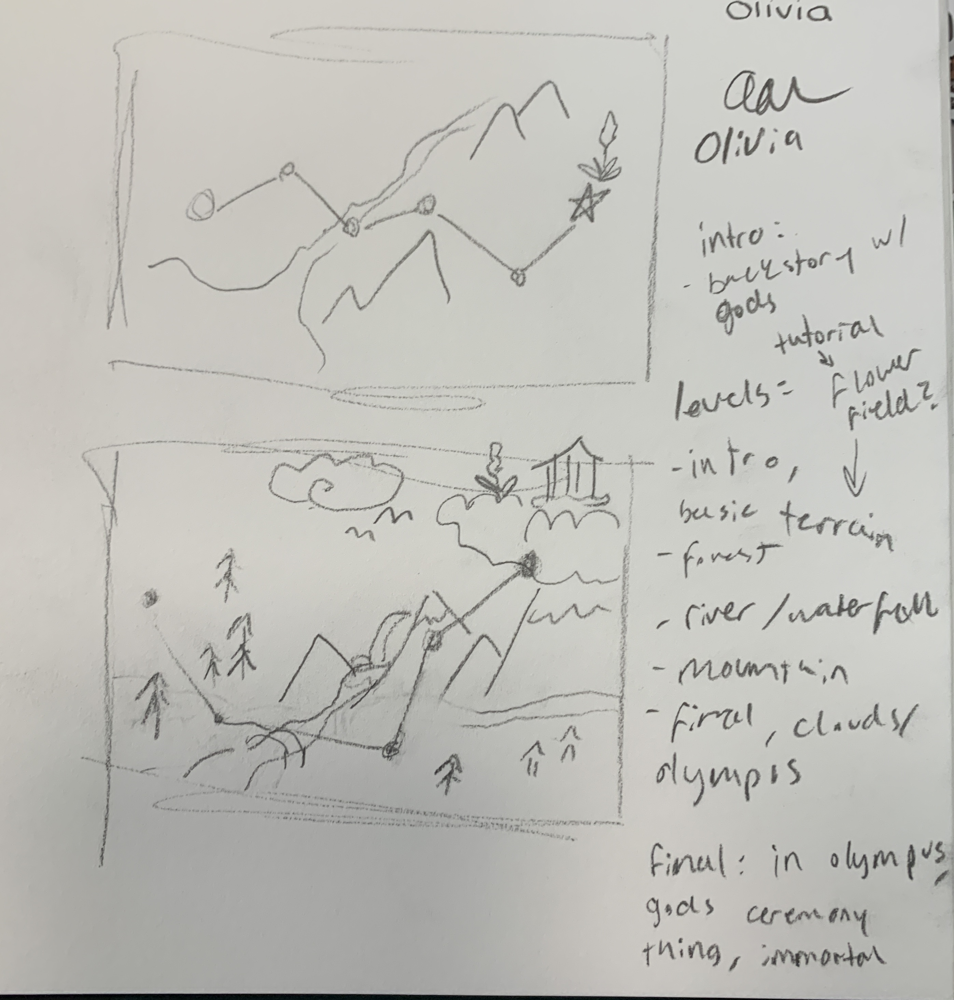
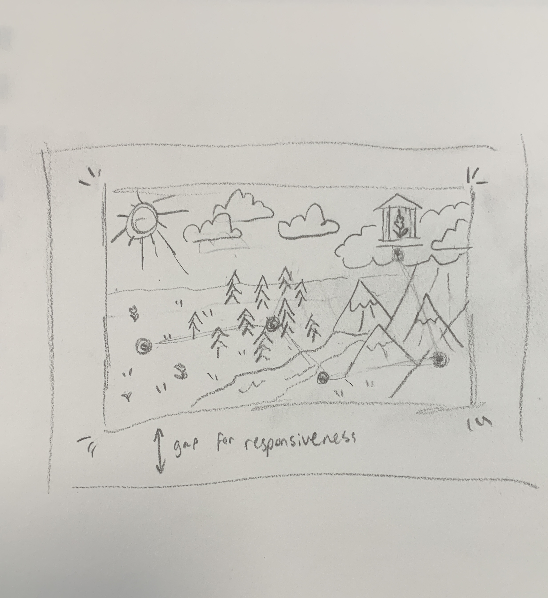
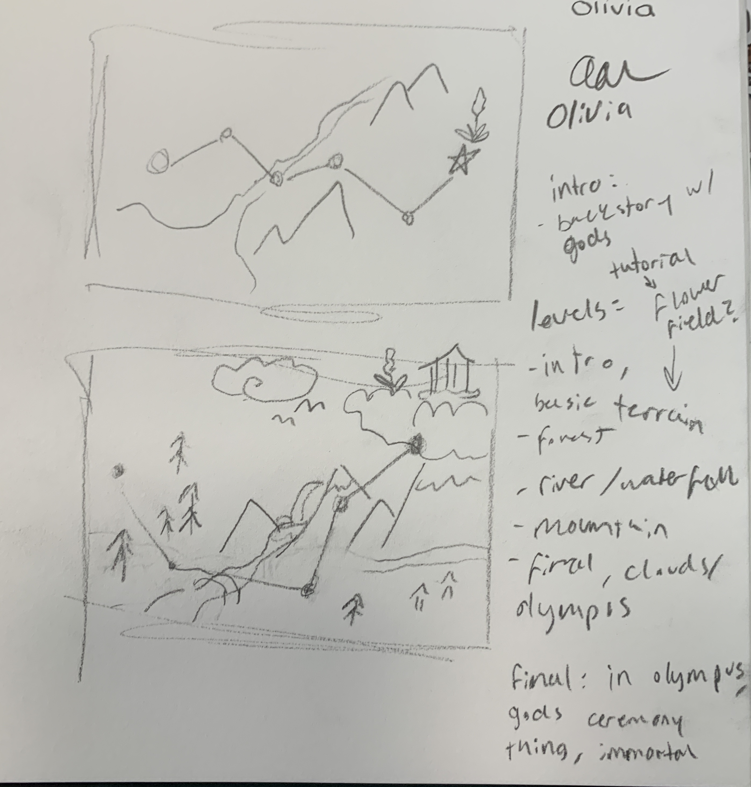
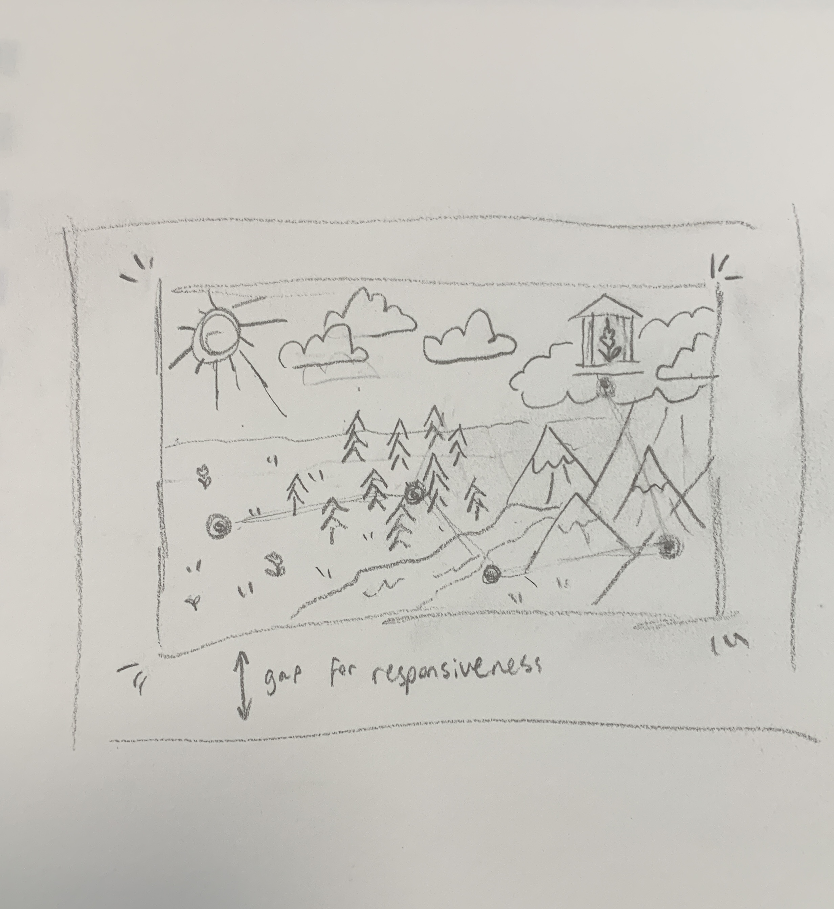

Research
The are.na link with my research is here. When I started this assignment, I wasn't sure what I wanted to do, so I put some interesting resources I found here. After I decided to make a game, all the sources I used were just cited in my code.
Sketches
The starting concept of my game was to make a sort of adventure game inspired by the Greek myth about the gods hiding an amaranth flower that would make the finder immortal. I had thought it would be cool to have a sort of journey, where the charcter you play as has to go find this amaranth flower to go make them immortal. First, I thought about what kind of character you would play as, and I wanted to use a figure from mythology to go with the background idea of the game. I was deciding between Cerberus, the three-headed dog, or a pegasus, but I thought the pegasus was cuter and might be easier to animate. Once I started thinking about using figures from Greek mythology, I thought about including monsters from those stories, which is how I came up with the idea of the monsters chasing the pegasus while looking for the amaranth. I started sketching the intro story, then thinking about including a map at the start with different levels.


 



Design Development
Once I had some sketches of how I wanted my game to look, I used the website Pixil to revise my ideas into something more final. Using this program, I designed the background, intro page, intro storyboards, and the game characters and animations.


Idea Revision
After I had a clear concept and some starting images, it was time to start coding. In my research, I came across the p5.play library, which is a way to simplify making games. Javascript is not my strong suit, but p5 simplifies it and has worked for me in the past, so I thought this subset of that coding library would help me here. I realized pretty quickly that this was going to be harder than I had thought. I started with a lot of big ideas about different levels and a homescreen, but I had a huge amount of difficulty simply making the initial story be clicked through to get to the game. Going back and forth to a map and different levels became impossible with the time I had.
My new idea was to make a simple runner game, kind of like the popular Google dinosaur game. I wanted to keep the game mechanics simple so I could focus more on the design. As much as I love coding, this was a challenge for me, so I didn't want to get too ambitious.

First Draft of the Game
After a ton of trial and error and fixing bugs, I managed to put together a mostly-working first draft for my game. At this stage, there wasn't any movement besides animations and jumping, but it took a lot of research and testing to get to this point of development. I had a lot of issues because of the intro story, as most of the resources I had found didn't account for something like that. So it involved a lot of writing code from scratch while learning a new coding library (p5.play).
I originally wanted there to be obstacles to slow down the pegasus and push it back, so if it touched the chasing monsters it would be game over. It was way harder to try and code those back and forth movements than to just have the horse jump, so I ended up keeping it so the obstacles meant game over and the monsters were more of a background addition.

Second Draft
I kept working on the game and at this stage had it almost finished. I added a score-keeper to add motivation to keep playing (every second passed was a point) and sounds and background music. Everything worked well except for a super-frustrating bug where the game would sort of time out and stop working if you waited on the "game over" page for too long or took to long going through the intro. My next task was to fix that, then I'd call the game finished. Getting this much of the game done was difficult but a lot easier than the first half, but this bug was super frustrating and took ages to solve.